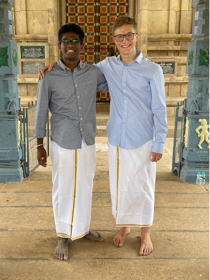

I'm hosted with GitHub Pages
On the first six-hour ride from the Chennai airport to Pattamanglam, I saw a plethora of roadside advertisements. Online and mental images of a place rarely include ads, but the real world almost always does. One of the most frequent ads I encountered was a green and gold ad for the company Uathayam. Curious about the company, I used my T-Mobile roaming data plan to discover that Uathayam is a men’s clothing brand. Being a man myself, I looked into some of their products. My eyes lighted upon a two-for-one combo of white button-down shirts for 899 rupees. Doing the rupees-to-dollars conversion in my head (a quick trick is to divide by 100 and then add 25 percent), I quickly realized that that came out to roughly 6 bucks a shirt. I had paid nearly ten times that for a similar (but not the same, as I would soon realize) shirt earlier that summer! At this point, I mentally added “buy dress shirts” to my India bucket list. Ideally, I wanted to find cotton button-down shirts in the colors white, light blue, pink, and lavender. I wanted these shirts to have no collar buttons, no breast pocket, and no design patterns. This task proved harder than I thought.
My first trip to a store was at Pothy’s in Madurai. I became optimistic as we entered the men’s clothing section and we saw an inventory of thousands of shirts of different styles, materials, patterns, and colors. We asked a store attendant for help finding a white or light blue shirt. The attendant went over to the shelf and pulled out a light blue shirt. As I put the shirt on, I noticed that it was cotton, had no design patterns, and had no collar buttons—a promising start. I looked in the mirror and imagined myself wearing the shirt to a fancy dinner at my school. It was then that I discovered a problem: the shirt had a breast pocket. I asked the attendant (or rather, Muthu asked the attendant for me) if he could find the same shirt without a breast pocket. The store attendant searched frantically across the shelves to find the shirt—he was dealing with a deep-pocketed American customer after all. Every option without a pocket, which was few and far between, was either the wrong color, wrong design, or wrong material. We left the store empty-handed—dismayed but not dejected.
For those unfamiliar with American-style men’s clothing, my fastidiousness might seem strange. Why should it matter whether a shirt has a breast pocket? In the American style, formal shirts, which usually come in solid pastel colors or simple patterns, nearly never have breast pockets. Casual shirts, which usually come in funky colors and patterns, often do have breast pockets. The Indian style reverses this scheme: formal shirts (with their pastel colors and simple designs) have pockets and casual shirts (with their funky colors and patterns) do not have pockets.
The casual-formal American-Tamil matrix extends beyond the realm of dress shirts and into the realm of language. As mentioned by linguist David Shulman, English words have permeated Tamil vocabulary and syntax. Muthu noted that English words play a central role in casual colloquial Tamil. When I asked Muthu for Tamil translations of English phrases like “thank you” or “I’m sorry,” he hesitated. He told me that the Tamil equivalents of those words aren’t used in everyday conversation because they are too formal. He told me that using these words would be the equivalent of saying “I beg you to please forgive me” if you bumped into someone on the street. More commonly, Tamils use the English words “thanks” and “sorry” followed by a Tamil form of address, usually anna (older brother) or akka (older sister). He said that the equivalent of “I’m sorry” was ennaiya manichirunga—a phrase I never used—and that the equivalent of “thank you” was nandri—a phrase I probably overused.
I used nandri as frequently as I used “thank you” in America. I used this phrase most often at mealtime. Whenever I received a portion of food, I would say “nandri” to whoever was serving that portion, whether it be our maid Shanthi Akka (Akka is a title meaning older sister), a restaurant server, or a temple volunteer. People would do a double take when they heard me say the word. The word was doubly out of place: first, it was in a casual setting, and second, it was coming from the mouth of an American. Most folks didn’t even register that I said nandri—Muthu often needed to follow up and explain to the person that I just said nandri. Other people couldn’t contain their laughter. People would break into smiles or burst into giddy laughter once they realized what I said. The parallels between clothing and language are striking. In both scenarios, a part of American culture (non-pocketed dress shirts, the English language) penetrates Tamil culture as a casual element (casual shirts, Tamil vernacular).
The next store we visited in our search for a non-pocketed shirt was the department store chain Chennai Silks in Madurai. Store attendants, wearing checkered navy button-downs (with breast pockets) and brown khaki pants, were more than happy to help us out. Our experience at Chennai Silks was similar to our experience at Pothy’s. When we asked for a shirt without a pocket, the store attendant looked confused. He thought about it for a minute and then took us over to an obscure area of the store with a few men’s shirts. Once again, all the non-pocketed shirts were either the wrong color, wrong design, or wrong material. Dejected, we abandoned our objective and decided to browse the store—which proved difficult. The store attendants followed us even more zealously than American salespeople working on commission. Muthu and I tried to make it clear that we were just browsing, but employees would follow directly behind us for up to one minute before realizing that their help was not wanted. Window shopping, “just browsing,” and casual shopping are anomalies in Tamil Nadu. When the store attendants rushed toward us like iron filings to a magnet, Muthu would always say “chumma paakuroam” or “we’re just browsing” to ward them off. Muthu later learned that Chennai Silks has a policy that prohibits customers from browsing unattended.
After Chennai Silks, the search for a non-pocketed shirt went downhill. We searched high and low from branded stores to smaller shops, but no stores had the shirt I wanted. Peter England, Van Heusen, Karaikudi Kandaangi Selai Kadai, and all the rest proved unfruitful. Every time we asked for shirts without pockets, we left the store empty-handed. At some point, we stopped asking about dress shirts when we entered men’s clothing stores. It was at this point that our search for the non-pocketed shirt moved from the world of men’s clothing stores to the real world.
For day-to-day attire, the majority of Indian men wear button-down shirts. A keen reader will note that every time I’ve described the button-down shirt of an Indian man, I’ve added the descriptor “with a breast pocket.” Breast pockets are ubiquitous in Indian culture—and not without reason. Indian men use their breast pockets for anything from pens, to cell phones, to surgical masks. Shirts without breast pockets are anomalies. Muthu and I played an informal game where we identified any button-downs we saw without a breast pocket, much like the American “slug bug” game where participants identify Volkswagen Beetles. Success in the pocket game was about as frequent as in the slug bug game. Brownie points were offered if the shirt was a simple pastel color without a pattern.
If we found a man wearing a shirt that matched our criteria, we tried to ask him where he got his shirt—provided that he was not simply a stranger passing by on the street. This endeavor never seemed to go well. One time, when we were in the airport security line in Mumbai for a connecting flight, I noticed that one of the security officers had a crisp light-blue button-down without a breast pocket. Since we were in an airport, I reasonably assumed he understood English. As I emptied the liquids and electronics out of my backpack, I worked up the courage to ask him where he got his shirt. When I asked him, the security officer seemed taken off guard. Imagine you are in his place: just as you are checking to make sure that a foreign national does not take any dangerous materials onboard an aircraft, he points to you and asks you a question you can’t quite make out. I would be taken aback too. I struggled for about thirty seconds to explain the nuances of why I was asking my question. The security officer’s first language was Hindi, so Muthu was of no help to me. I noticed that the security officer was becoming visibly concerned, so I dropped the question.
When Muthu’s aaya (grandmother) hosted a pooja (ritual) at her local temple, Muthu and I both dressed up in a button-down shirt and a veshti, which is a type of Tamil men’s formal garb that is roughly equivalent to wrapping a blanket around your legs. I knew that I would stick out at this pooja like a sore thumb—not only was I white, but my shirt also didn’t have a breast pocket! I thought I would be the only attendee without a breast pocket, but I was mistaken. While the pooja was going on, we noticed that one of Muthu’s relatives—who looked like a Tamil version of Jeff Goldblum—was wearing a white button-down without a breast pocket! I asked Muthu how he and Tamil Jeff Goldblum were related. Muthu didn’t know. I asked Muthu to ask Tamil Jeff Goldblum where he got his shirt. Muthu was hesitant. Uma, his amma (mother), confirmed his hesitancy. She said that asking a question like that might prompt Tamil Jeff Goldblum, who we later learned was her cousin, to cast judgment on their part of the family. The question went unasked.

Muthu and me in veshtis
We made a curious discovery when we started playing the pocket game while watching Tamil movies and television. Most people think that Bollywood produces most Indian movies, which is false. Bollywood accounts for less than half of the revenue for India’s film industry. Because India is fragmented into so many different languages, regional film industries play a large role in the Indian movie scene. For example, Pollywood makes Punjabi movies, Tollywood makes Telugu movies, Kollywood makes Tamil movies, and Mollywood makes Malayalam movies.
Nearly every house in Tamil Nadu has cable television access. Muthu’s family uses the television provider Sun Direct. Many Tamil television channels consist of compilations of songs from Kollywood movies. The closest American equivalent would have been MTV. America has a well-established independent music industry—most songs are produced independently or through a record label. In Tamil Nadu, almost every Tamil song heard on the radio was originally in a Kollywood movie. Independent artists like Hip Hop Tamizha (a Tamil hip-hop duo) are few and far between.
While watching Indian cinema, my eyes were conditioned to look for button-downs without breast pockets. It was then that I stumbled upon an epiphany. As we were finishing the 2020 Tollywood movie Bheeshma, I noticed that the male protagonist was wearing a white button-down without a breast pocket. I did a double take. After Muthu, Harini (Muthu’s sister), and I finished the movie, I rewinded through the entire movie, scrutinizing every shirt that the protagonist wore. As I suspected, he wore exclusively non-pocketed button-downs. These button-downs were not just any color—they were simple, solid, pastel colors.
I was stunned. Where did they get these shirts? Certainly not Chennai Silks. Most likely, the costume designers incorporated American-style formal wear into the movie’s wardrobe because they thought the aesthetic was appealing. The non-pocketed button-downs were not unique to Bheeshma. In movie after movie and music video after music video, the majority of male actors and singers wore mostly non-pocketed button-downs. Wardrobes were not the only distinction between movies and daily life. Attitudes about love and marriage also mark a dividing line: Tamil songs and movies are frequently about falling in love, but according to the BBC, over ninety percent of Indian marriages are arranged. Just like Hollywood is often an imperfect reflection of American culture, Kollywood is often an imperfect reflection of Tamil culture.
Tamil mass media—specifically newspapers, television, and movies—is a form of vertical communication, or communication down a social hierarchy. Horizontal communication—communication between members of the same status—includes face-to-face discussions between family and friends, phone calls, and WhatsApp messaging. Frequently, Tamils pass along WhatsApp forwards of various types. The older generation forwards information about auspicious prayers to recite or temples to visit. The younger generation often forward memes. Appakal (fathers) forward life tips and stories. Ammakal (mothers) often forward recipes. Horizontal communication is very much centered around ideas like family, faith, and community. Both vertical and horizontal communication shape society. In authoritarian societies, horizontal communication is suppressed and vertical communication takes the form of propaganda. In Tamil culture, we see a disconnect between the values purported through vertical communication and the more parochial values espoused by common Tamil folk.
The parallels between apparel and language are once again striking. David Shulman notes that the Tamil language exhibits what is known as diglossia, a linguistic gap between formal literary Tamil and casual colloquial Tamil. Put differently, the words scribbled on the sheets don’t match the words spoken on the streets. This divide mirrors the divide between Tamil cinema and Tamil daily life—what’s seen on screen doesn’t match the day-to-day routine. Shulman also points out that modern Tamil media like movies and television have exerted centripetal pressure on Tamil dialects, leading to increased uniformity. That said, Shulman notes that regional dialects remain a strong centrifugal counterforce in their own right. While Tamil mass media can exert pressure on apparel, relationships, and language, it cannot ensure that changes will ensue.
I never did find my button-down shirt without a breast pocket. My American formal wear repertoire remained at its current size. The presence or absence of a breast pocket may seem trivial to most, but rich cultural narratives often lie in these minutiae. A simple search for a shirt without a breast pocket led me to more deeply explore Tamil apparel, Tamil language, and Tamil cinema. I only discovered this story because I was a particular person looking for a particular product at a particular location. Who knows what deeper stories lie beyond the periphery of my perspective.